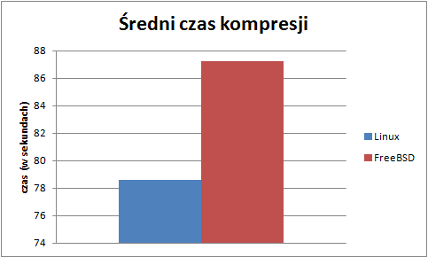

Spis treści
Test programem ZIP i UNZIP
Wstęp
Test pozwala zmierzyć wydajność kompresji katalogu do formatu ".zip" i dekompresji skompresowanego wcześniej pliku.
Procedura testowa
Test wykonano programem ZIP dla kompresji i programem UNZIP dla dekompresji na pliku pobranym ze strony https://cdn.kernel.org/pub/linux/kernel/v4.x/testing/linux-4.4-rc2.tar.xz. Test polega na zmierzeniu czasu kompresji i dekompresji. Im krótszy otrzymamy czas, tym lepiej. Parametry użyte podczas kompresji to -r i -q natomiast dla dekompresji to -X.
r - powoduje on, że do pliku archiwum.zip trafia nie tylko dany katalog, ale również jego zawartość.
q - tryb cichy. Nie wyświetla komunikatów informacyjnych.
X - rozpakowanie archiwum archiwum.zip, przywracając oryginalne wartości UID i GID.
Wyniki dla systemu Linux
Tabela - wyniki ogólne
| Czas kompresji (w sekundach) | Czas dekompresji (w sekundach) | |
|---|---|---|
| Średnia arytmetyczna | 17,125 | 6,936 |
| Odchylenie standardowe | 0,166 | 1,127 |
| Wartość maksymalna | 17,394 | 9,336 |
| Wartość minimalna | 16,921 | 5,920 |
Tabela - wyniki szczegółowe
| Czas kompresji (w sekundach) | Czas dekompresji (w sekundach) | |
|---|---|---|
| Komputer labc192 | 16,921 | 6,812 |
| Komputer labc193 | 17,249 | 6,432 |
| Kopmuter labc194 | 16,964 | 5,920 |
| Komputer labc195 | 17,107 | 7,119 |
| Komputer labc197 | 17,394 | 9,336 |
| Komputer labc198 | 17,050 | 6,679 |
| Komputer labc199 | 17,190 | 6,256 |
Podsumowanie
Rozpatrując wyniki powyższego testu można zauważyć, że najgorzej wypadł komputer labc197 zarówno dla kompresji, osiągając czas 17,394s, jak i dekompresji, osiągając czas 9,336s. Komputer labc192 osiągnął najlepszy wynik podczas kompresji (16,921s), natomiast komputer labc194 przy dekompresji (5,920s). Małe odchylenie standardowe wskazuje na małe różnice w wynikach pomiędzy poszczególnymi komputerami.
Test programem RAR i UNRAR
Wstęp
Test pozwala zmierzyć wydajność kompresji katalogu do formatu ".rar" i dekompresji skompresowanego wcześniej pliku.
Procedura testowa
Test wykonano programem RAR dla kompresji i programem UNRAR dla dekompresji na pliku pobranym ze strony https://cdn.kernel.org/pub/linux/kernel/v4.x/testing/linux-4.4-rc2.tar.xz. Test polega na zmierzeniu czasu kompresji i dekompresji. Im krótszy otrzymamy czas, tym lepiej. Parametry użyte podczas kompresji to -a i -idq, z kolei dla dekompresji parametr -x.
a- dodanie pliku do archiwum.
idq - tryb cichy. Wyłącza wyświetlanie komunikatów.
x - rozpakowanie archiwum archiwum.rar, przywracając oryginalne wartości UID i GID.
Wyniki dla systemu Linux
Tabela - wyniki ogólne
| Czas kompresji (w sekundach) | Czas dekompresji (w sekundach) | |
|---|---|---|
| Średnia arytmetyczna | 30,825 | 8,788 |
| Odchylenie standardowe | 0,897 | 0,488 |
| Wartość maksymalna | 32,479 | 9,400 |
| Wartość minimalna | 29,703 | 8,007 |
Tabela - wyniki szczegółowe
| Czas kompresji (w sekundach) | Czas dekompresji (w sekundach) | |
|---|---|---|
| Komputer labc192 | 30,792 | 9,375 |
| Komputer labc193 | 31,397 | 8,814 |
| Kopmuter labc194 | 29,703 | 8,574 |
| Komputer labc195 | 30,760 | 8,794 |
| Komputer labc197 | 32,479 | 9,400 |
| Komputer labc198 | 30,321 | 8,552 |
| Komputer labc199 | 30,325 | 8,007 |
Podsumowanie
Najlepszy wynik testu kompresji uzyskał komputer labc194 (29,703s). Najgorszy wynik w obu testach uzyskał komputer labc197, dla kompresji 32,479s, a dla dekompresji 9,400s. Najlepszy wynik testu dekompresji uzyskał komputer labc199 (8,007s).
Wyniki dla systemu FreeBSD
Tabela - wyniki ogólne
| Czas kompresji (w sekundach) | Czas dekompresji (w sekundach) | |
|---|---|---|
| Średnia arytmetyczna | 87,231 | 37,550 |
| Odchylenie standardowe | 72,488 | 7,735 |
| Wartość maksymalna | 251,085 | 53,446 |
| Wartość minimalna | 53,435 | 30,001 |
Tabela - wyniki szczegółowe
| Czas kompresji (w sekundach) | Czas dekompresji (w sekundach) | |
|---|---|---|
| Komputer labc192 | 251,085 | 36,665 |
| Komputer labc193 | 63,409 | 36,577 |
| Kopmuter labc194 | 61,852 | 30,001 |
| Komputer labc195 | 70,15 | 34,678 |
| Komputer labc197 | 53,435 | 53,446 |
| Komputer labc198 | 55,306 | 39,79 |
| Komputer labc199 | 55,383 | 31,693 |
Podsumowanie
Najlepszy wynik podczas kompresji 53,435s uzyskał komputer labc197. Komputer labc192 osiągnął najgorszy wynik podczas tego testu, osiągając wynik 251,085s. Należy zauważyć, że wynik ten bardzo różni się od pozostałych. Może on spowodować, że otrzymane wyniki będą niewiarygodne. Najlepszy czas dekompresji uzyskał komputer labc194 (30,001s), natomiast najgorszy wynik zanotowano dla komputera labc197 (53,446s).
Podsumowanie kilku systemów
Poniższe wykresy przedstawiają porównanie średniego czasu kompresji i dekompresji na systemie operacyjnym Linux i FreeBSD.

Zaróno dla kompresji i dekompresji najlepsze wyniki uzyskaliśmy na systemie Linux. System operacyjny FreeBSD dla kompresji uzyskał prawie 3 razy gorszy wynik, natomiast dla dekompresji prawie czterokrotnie gorszy.
Test programem GZIP i GUNZIP
Wstęp
Test pozwala zmierzyć wydajność kompresji zarchiwizowanego pliku programem tar do formatu ".gz" i dekompresji skompresowanego wcześniej pliku.
Procedura testowa
Test wykonano programem GZIP dla kompresji i dekompresji na pliku pobranym ze strony https://cdn.kernel.org/pub/linux/kernel/v4.x/testing/linux-4.4-rc2.tar.xz. Test polega na zmierzeniu czasu kompresji i dekompresji. Im krótszy otrzymamy czas, tym lepiej. Parametr użyty podczas kompresji to -c, z kolei dla dekompresji użyto parametru -d.
c- kompresowanie bez usuwania pliku wejściowego.
d - dekompresja.
Wyniki dla systemu Linux
Tabela - wyniki ogólne
| Czas kompresji (w sekundach) | Czas dekompresji (w sekundach) | |
|---|---|---|
| Średnia arytmetyczna | 18,347 | 4,104 |
| Odchylenie standardowe | 0,908 | 0,818 |
| Wartość maksymalna | 20,059 | 5,758 |
| Wartość minimalna | 17,483 | 3,552 |
Tabela - wyniki szczegółowe
| Czas kompresji (w sekundach) | Czas dekompresji (w sekundach) | |
|---|---|---|
| Komputer labc192 | 18,747 | 3,561 |
| Komputer labc193 | 20,059 | 3,827 |
| Kopmuter labc194 | 17,483 | 3,700 |
| Komputer labc195 | 18,449 | 3,698 |
| Komputer labc197 | 17,666 | 4,632 |
| Komputer labc198 | 17,559 | 5,758 |
| Komputer labc199 | 18,465 | 3,552 |
Podsumowanie
Najlepszy wynik dla kompresji osiągnęła maszyna labc194 (17,483s), natomiast dla dekompresji maszyna labc199 (3,552s). Najgorsze wyniki dla testu kompresji zanotowano dla komputera labc193 (20,059s). Z dekompresją słabo sobie poradził komputer labc198 (5,758s).
Wyniki dla systemu FreeBSD
Tabela - wyniki ogólne
| Czas kompresji (w sekundach) | Czas dekompresji (w sekundach) | |
|---|---|---|
| Średnia arytmetyczna | 20,138 | 5,968 |
| Odchylenie standardowe | 8,044 | 2,586 |
| Wartość maksymalna | 26,183 | 8,800 |
| Wartość minimalna | 2,919 | 0,905 |
Tabela - wyniki szczegółowe
| Czas kompresji (w sekundach) | Czas dekompresji (w sekundach) | |
|---|---|---|
| Komputer labc192 | 2,919 | 0,905 |
| Komputer labc193 | 20,783 | 7,715 |
| Kopmuter labc194 | 20,033 | 5,319 |
| Komputer labc195 | 20,326 | 6,379 |
| Komputer labc197 | 25,051 | 7,459 |
| Komputer labc198 | 25,669 | 8,800 |
| Komputer labc199 | 26,183 | 5,200 |
Podsumowanie
W obu przypadkach najlepszy czas osiągnęła maszyna labc192, jednak wyniki są pieciokrotnie niższe w teście kompresji i dekompresji niż w pozostałych przypadkach. Sytuacja ta może zaburzyć prawdziwy obraz testów. Zauważyć można, że pozostałe komputery wykonały test w czasie nie krótszym niż 20,033s dla kompresji i 5,200s dla dekompresji. Najgorsze wyniki uzyskała maszyna labc199 (26,183s) dla kompresji i maszyna labc198 (8,800s).
Wyniki dla systemu Windows
Tabela - wyniki ogólne
| Czas kompresji (w sekundach) | Czas dekompresji (w sekundach) | |
|---|---|---|
| Średnia arytmetyczna | 18,043 | 4,276 |
| Odchylenie standardowe | 4,113 | 0,895 |
| Wartość maksymalna | 20,884 | 4,895 |
| Wartość minimalna | 8,817 | 2,284 |
Tabela - wyniki szczegółowe
| Czas kompresji (w sekundach) | Czas dekompresji (w sekundach) | |
|---|---|---|
| Komputer labc192 | 19,214 | 4,895 |
| Komputer labc193 | 19,482 | 4,545 |
| Kopmuter labc194 | 19,263 | 4,475 |
| Komputer labc195 | 19,545 | 4,679 |
| Komputer labc197 | 19,098 | 4,368 |
| Komputer labc198 | 8,817 | 2,284 |
| Komputer labc199 | 20,884 | 4,685 |
Podsumowanie
I w tym przypadku spotykamy się z sytuacją, kiedy jedna z maszyn uzyskała skrajnie niskie wartości, które mogą zaburzać obraz wyników testów. Najlepszy wynik dla kompresji (8,817s) i dekompresji (2,284s) uzyskała maszyna labc198. Najgorszy wynik kompresji zanotowano na maszynie labc199 (20,884s). Z dekompresją słabo poradziła sobie maszyna labc192 uzyskując wynik 4,895s.
Podsumowanie kilku systemów
Poniższe wykresy przedstawiają porównanie średniego czasu kompresji i dekompresji na systemie operacyjnym Linux, FreeBSD i Windows.
Z powyższych wykresów widać, że najlepiej z testami w przypadku kompresji poradził sobie system Windows. Na drugim miejscu Linux. Najgorzej wypadł system FreeBSD uzyskując ponad dwa razy gorszy czas od Windowsa i dwa razy gorszy od Linuxa. W przypadku dekompresji lepszy okazał się Linux i to on uzyskał najmniejszy czas wykonywania testu. Jak i w poprzednich przypadkach testy dekompresji najdłużej wykonywał system FreeBSD.
Test programem XZ i UNXZ
Wstęp
Test pozwala zmierzyć wydajność kompresji zarchiwizowanego pliku programem tar do formatu ".xz" i dekompresji skompresowanego wcześniej pliku.
Procedura testowa
Test wykonano programem XZ dla kompresji i programem UNXZ dla dekompresji na pliku pobranym ze strony https://cdn.kernel.org/pub/linux/kernel/v4.x/testing/linux-4.4-rc2.tar.xz. Test polega na zmierzeniu czasu kompresji i dekompresji. Im krótszy otrzymamy czas, tym lepiej. Parametry użyte podczas kompresji to -z i -k natomiast dla dekompresji nie użyto żadnych dodatkowych parametrów.
z - wymuszenie kompresji.
k - zachowanie pliku wejściowego.
Wyniki dla systemu Linux
Tabela - wyniki ogólne
| Czas kompresji (w sekundach) | Czas dekompresji (w sekundach) | |
|---|---|---|
| Średnia arytmetyczna | 7,057 | 277,932 |
| Odchylenie standardowe | 0,295 | 5,048 |
| Wartość maksymalna | 7,512 | 286,69 |
| Wartość minimalna | 6,605 | 273,32 |
Tabela - wyniki szczegółowe
| Czas kompresji (w sekundach) | Czas dekompresji (w sekundach) | |
|---|---|---|
| Komputer labc192 | 7,298 | 286,69 |
| Komputer labc193 | 7,512 | 273,32 |
| Kopmuter labc194 | 6,843 | 273,712 |
| Komputer labc195 | 7,012 | 273,464 |
| Komputer labc197 | 7,024 | 277,120 |
| Komputer labc198 | 7,105 | 279,568 |
| Komputer labc199 | 6,605 | 281,647 |
Podsumowanie
Komputer labc199 uzyskał najlepszy wynik w przypadku kompresji, natomiast maszyna labc193 w przypadku dekompresji. Największy czas dla kompresji uzyskała maszyna labc193, a dla dekompresji labc192.